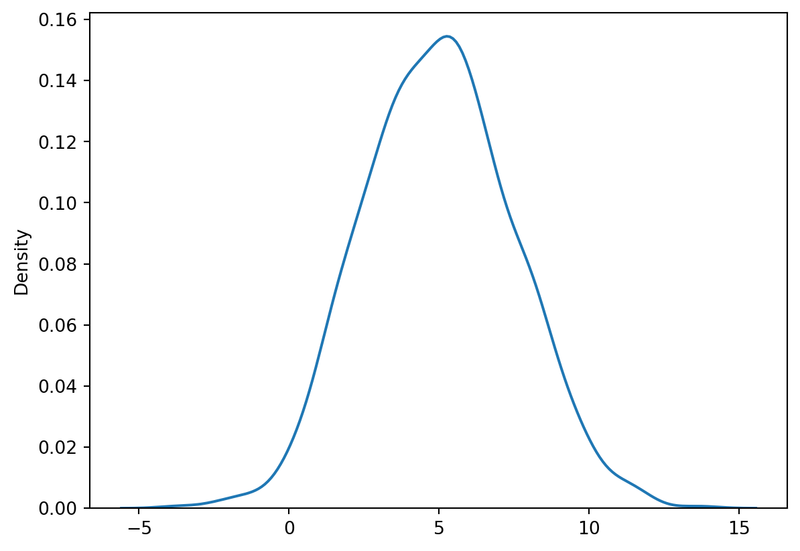
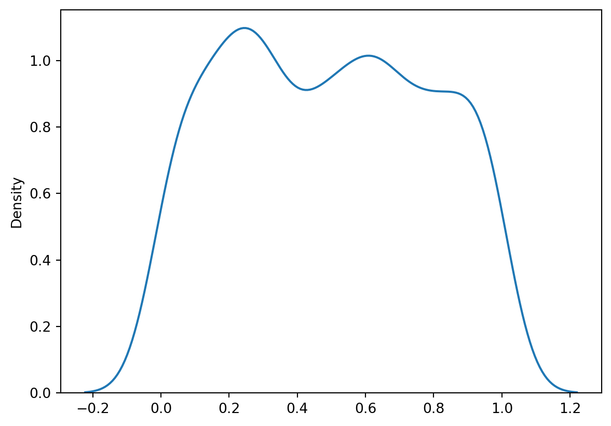
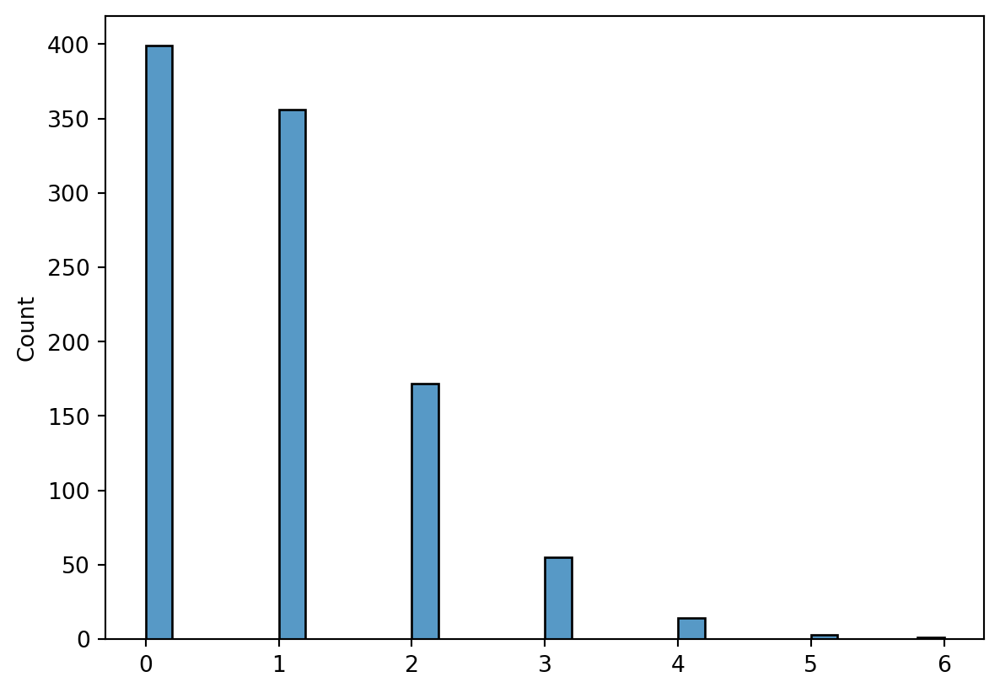
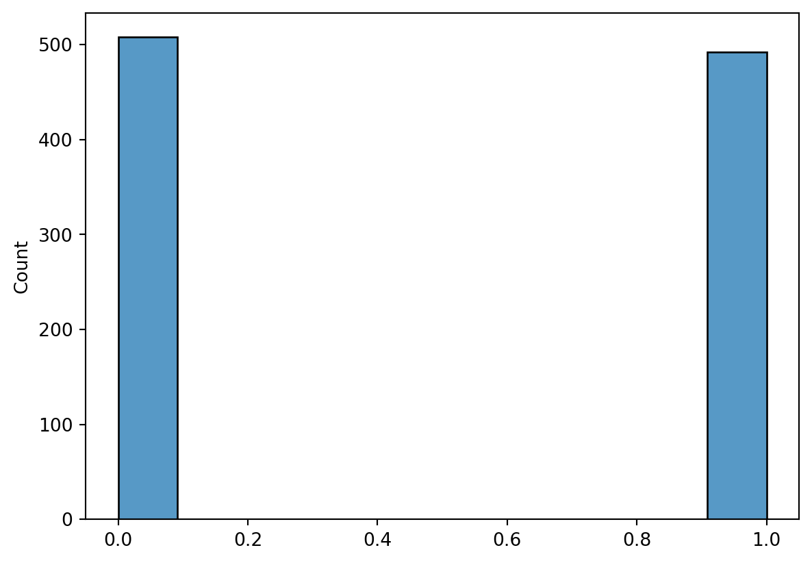
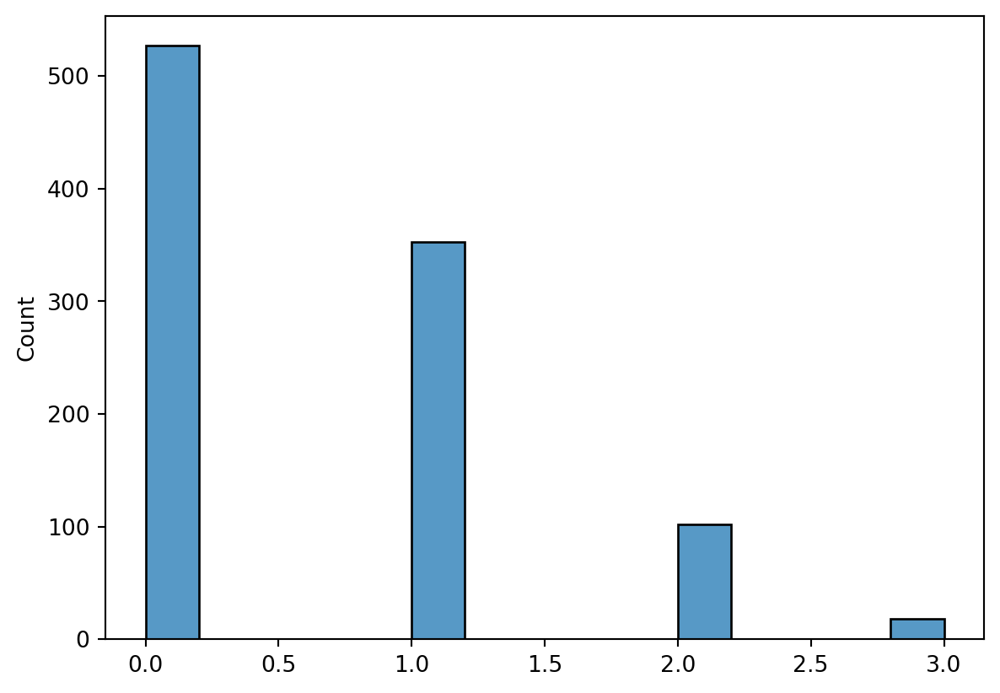
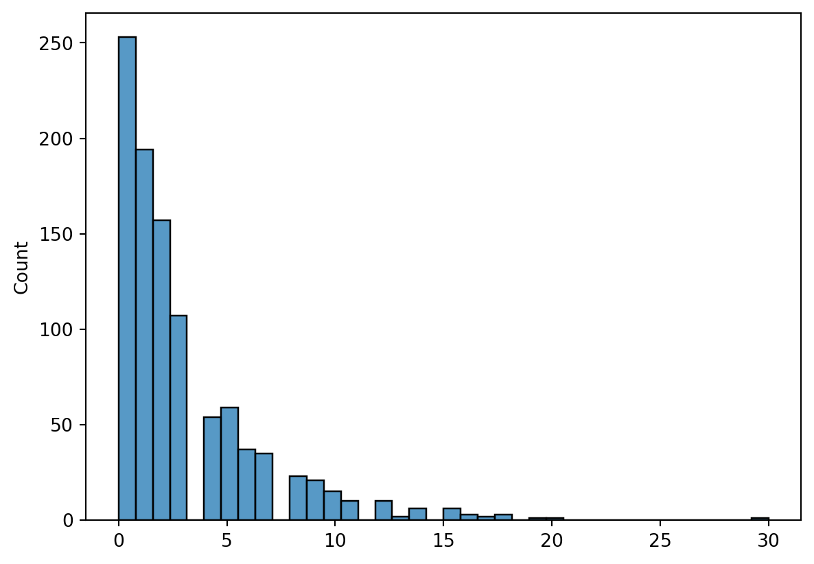

import pandas as pd
import seaborn as sns
import statsmodels.api as sm
import statsmodels.formula.api as smf
import numpy as np
from numpy.random import default_rng
from scipy import statsStatistics
df = sm.datasets.get_rdataset("mtcars", "datasets", cache = True).dataSummary Stats
# get the data as a vector
v = df.mpg
np.mean(v)
# (https://docs.scipy.org/doc/scipy/reference/generated/scipy.stats.mode.html)
stats.mode(v, keepdims = False)
np.median(v)
np.var(v)35.188974609374995Simulating Data
After trying a few things, it looks like numpy is king here.
Create an RNG Object
To get started, create an RNG object that will make sure everything is initialized correctly.
rng = default_rng()We can now go through a list of common distributions, simulate from them, and visualize to make sure we’re on the right track.
Normal/Guassian
n = 1000
# because calling the mean and sd the "mean" and "sd" would be too obvious
v_norm = rng.normal(loc = 5, scale = 2.5, size = n)
sns.kdeplot(v_norm)<AxesSubplot: ylabel='Density'>
Uniform
# this makes sense lol
v_unif = rng.uniform(low = 0, high = 1, size = n)
sns.kdeplot(v_unif)<AxesSubplot: ylabel='Density'>
Poisson
# lamda was too long I guess
v_poisson = rng.poisson(lam = 1, size = n)
sns.histplot(v_poisson)<AxesSubplot: ylabel='Count'>
Bernoulli
# bernoulli
# https://stackoverflow.com/questions/47012474/bernoulli-random-number-generator
v_bernoulli = rng.binomial(n = 1, p = 0.5, size = n)
sns.histplot(v_bernoulli)<AxesSubplot: ylabel='Count'>
Binomial
# binomial
v_binomial = rng.binomial(n = 4, p = 0.15, size = n)
sns.histplot(v_binomial)<AxesSubplot: ylabel='Count'>
Negative Binomial
# this makes sense
v_negative_binomial = rng.negative_binomial(n = 1, p = 0.25, size = n)
sns.histplot(v_negative_binomial)<AxesSubplot: ylabel='Count'>
Modeling
Linear Regression
Another routine thing that will come up a lot is linear regression. It’s not as obvious as R, but it’s pretty straight-forward.
# you can use formula is you use smf
linear_model = smf.ols(formula = 'wt ~ disp + mpg', data = df).fit()We can get the results using sume summary() method, and it will look pretty familiar to R users.
linear_model.summary()| Dep. Variable: | wt | R-squared: | 0.836 |
| Model: | OLS | Adj. R-squared: | 0.824 |
| Method: | Least Squares | F-statistic: | 73.65 |
| Date: | Fri, 27 Jan 2023 | Prob (F-statistic): | 4.31e-12 |
| Time: | 10:21:49 | Log-Likelihood: | -15.323 |
| No. Observations: | 32 | AIC: | 36.65 |
| Df Residuals: | 29 | BIC: | 41.04 |
| Df Model: | 2 | ||
| Covariance Type: | nonrobust |
| coef | std err | t | P>|t| | [0.025 | 0.975] | |
| Intercept | 3.5627 | 0.699 | 5.094 | 0.000 | 2.132 | 4.993 |
| disp | 0.0043 | 0.001 | 3.818 | 0.001 | 0.002 | 0.007 |
| mpg | -0.0663 | 0.023 | -2.878 | 0.007 | -0.113 | -0.019 |
| Omnibus: | 0.431 | Durbin-Watson: | 1.028 |
| Prob(Omnibus): | 0.806 | Jarque-Bera (JB): | 0.579 |
| Skew: | 0.187 | Prob(JB): | 0.749 |
| Kurtosis: | 2.458 | Cond. No. | 2.52e+03 |
Notes:
[1] Standard Errors assume that the covariance matrix of the errors is correctly specified.
[2] The condition number is large, 2.52e+03. This might indicate that there are
strong multicollinearity or other numerical problems.
Logistic Regression
The next logical step is logistic regression. No surprises here.
# fit the model
logistic_model = smf.glm("am ~ wt + mpg", data = df,
family = sm.families.Binomial()).fit()
logistic_model.summary()| Dep. Variable: | am | No. Observations: | 32 |
| Model: | GLM | Df Residuals: | 29 |
| Model Family: | Binomial | Df Model: | 2 |
| Link Function: | Logit | Scale: | 1.0000 |
| Method: | IRLS | Log-Likelihood: | -8.5921 |
| Date: | Fri, 27 Jan 2023 | Deviance: | 17.184 |
| Time: | 10:21:49 | Pearson chi2: | 32.7 |
| No. Iterations: | 7 | Pseudo R-squ. (CS): | 0.5569 |
| Covariance Type: | nonrobust |
| coef | std err | z | P>|z| | [0.025 | 0.975] | |
| Intercept | 25.8866 | 12.194 | 2.123 | 0.034 | 1.988 | 49.785 |
| wt | -6.4162 | 2.547 | -2.519 | 0.012 | -11.407 | -1.425 |
| mpg | -0.3242 | 0.239 | -1.354 | 0.176 | -0.794 | 0.145 |
ANOVA
The next basic anaylsis I wanted to recreate was ANOVA. This is handled nicely by statsmodels, looking more or less like the previous models.
# fit the initial model
anova_model = smf.ols("cyl ~ mpg + disp", data = df).fit()
anova = sm.stats.anova_lm(anova_model)
anova| df | sum_sq | mean_sq | F | PR(>F) | |
|---|---|---|---|---|---|
| mpg | 1.0 | 71.801048 | 71.801048 | 132.393794 | 2.496891e-12 |
| disp | 1.0 | 11.346399 | 11.346399 | 20.921600 | 8.274021e-05 |
| Residual | 29.0 | 15.727553 | 0.542329 | NaN | NaN |
Tukey Test
After an ANOVA, some sort of post-hoc test is usually preformed. This isn’t as obvious as the ones above, requiring us to specify monovariate vectors instead of using a formla.
# specify the groups without the formual
tukey_results = sm.stats.multicomp.pairwise_tukeyhsd(endog = df["mpg"],
groups = df["cyl"])
print(tukey_results) Multiple Comparison of Means - Tukey HSD, FWER=0.05
=====================================================
group1 group2 meandiff p-adj lower upper reject
-----------------------------------------------------
4 6 -6.9208 0.0003 -10.7693 -3.0722 True
4 8 -11.5636 0.0 -14.7708 -8.3565 True
6 8 -4.6429 0.0112 -8.3276 -0.9581 True
-----------------------------------------------------